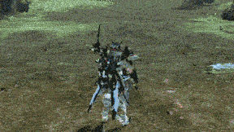

Archery
Archery
Cranked to Eleven

Bullshit
Bullshit
To Its Core

You'd better know these things...
While many would say "bow is a pretty boring class" or "this weapon is too easy", the actual mechanics of Bow Braver are a lot deeper than what most would expect. If you have known about all of these, then good, just skip this section.
Otherwise, take your time going through here and see what bullshit maneuvers Bow Braver can perform.

There are three things that you must remember about it.
| The unconventional way of PP recovery. It works. | ~16k uncharged Master Shot VS ~19k Charged Shot. |
|---|
Step now grants you ~0.12 seconds of invulnerability on use, which is enough to evade most things in PSO2 if you time it right. You can Step to cancel many PAs and Techniques, too! Check the PA section on which can be canceled. For the techniques, supportive ones like Shifta and Resta are common, and you don’t have to always charge it.
The delay after Step animation is short but enough to put you in a bad situation.
With the existence of “Step Jump”,
as long as you press your “Jump” button after it, you won’t get the delay and keep on moving. Walking away from the attacks or keeping a good distance from the enemies are better sometimes.
It is useful when you run out of PP to use PA at that moment or you just want to get that small distance for repositioning. The kick deals damage and recovers PP, affected by Attack PP Recovery bonus from other sources.
You can chain Step Kick to move around faster, especially in a hectic fight instead of using
Asagiri-rendan [Morning Mistreaver] or techniques. Additional attack or PA after this will put
yourself back into firing pose. Again, it allows you to be a bit more aggressive; getting up
close and personal. Just be careful about where you are heading.

Penetrate Arrow |
Master Shot |
|---|---|
|

Banishing Arrow |
Air-row Ballet |
The duration of invincibility is almost twice your usual Step. You can rely more on this maneuver in any fights,
moving around while firing PA!
Note that Banishing Arrow is a bit special as the JA circle appears FASTER when using it this way.
It helps you set and follow up on the combo quicker.
Performing it “sideways” (left/right) while manually aiming moves you a bit further than locking on.
The move also lifts you in the air for a moment, allowing you to perform "Air-row Ballet" as long as you have PP to spend.
There are two aiming modes in PSO2 and you can switch between it using the default
key setting (“Z” key if it’s Mouse & Keyboard, and I don’t know what controller uses):
Lock-on mode and Over-the-shoulder mode.

|
|
| Lock-on mode | Over-the-shoulder mode. |
|---|
Bow Bravers often switch between both aiming modes depending on what they are facing, the Photon Arts, and also personal preference. There are various things that you should know though.
The game will put the “lock-on reticle” to the closest targetable part of the nearest enemy based on your position and only when your character faces the enemy.
| Combat Example with Lock-on mode. | Combat Example with OTS mode. |
|---|---|
| Using the lock-on to help with PA aiming. | |
Yes, it is possible to play the game using only a single aiming mode, especially the OTS mode regardless of your peripheral choice. Being able to switch between them gives you a greater degree of freedom and awareness in various fights. It’s not a new concept and everyone has his/her personal approach to the aiming when finding the enemy’s weak points or engaging a large pack of minor enemies. Take your time learning the ropes and search for online videos on how different Bow Bravers utilize it.
There are a couple things that you should keep in your mind when setting up the input. You can play bow just fine with the default control, except the wheel setting.
Here’s the deal for Keyboard & Mouse players. Left button, right button, and the middle (wheel) button are your default keys for using Photon Arts. I recommend removing the supplemental control from your middle mouse so you don’t accidentally switch weapons.
Apart from using “R/F keys” and clicking to confirm, utilizing the numpad, or finding the MMO mouse, there’s a trick you can do to handle weapon palette switching. Thanks to my friend Gunner (who also learned from another Gunner), you can bind the shortcut word with the weapon palette command (/mpal1 ~ /mpal6) on F1 - F10 keys. It works.

One more thing. As you will be spamming a lot of PA while playing bow, be considerate about which mouse input (or controller input) you want for things like Penetrating Arrow, Master Shot, and Torrential Arrow. Save your fingers, and be cautious when playing in a long session.
Powered by w3.css and the cursed soul of the guide writer UwU.